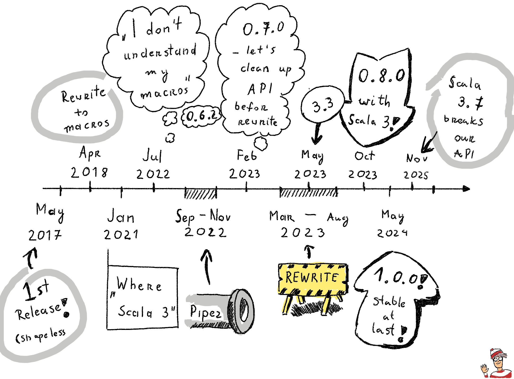
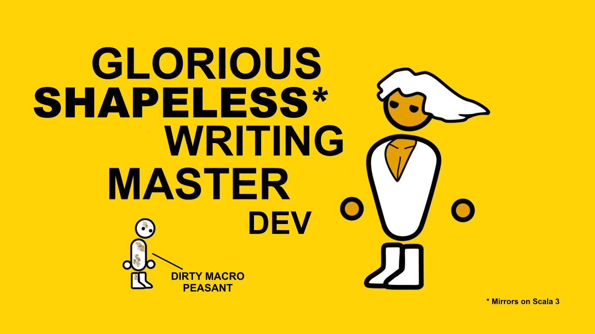
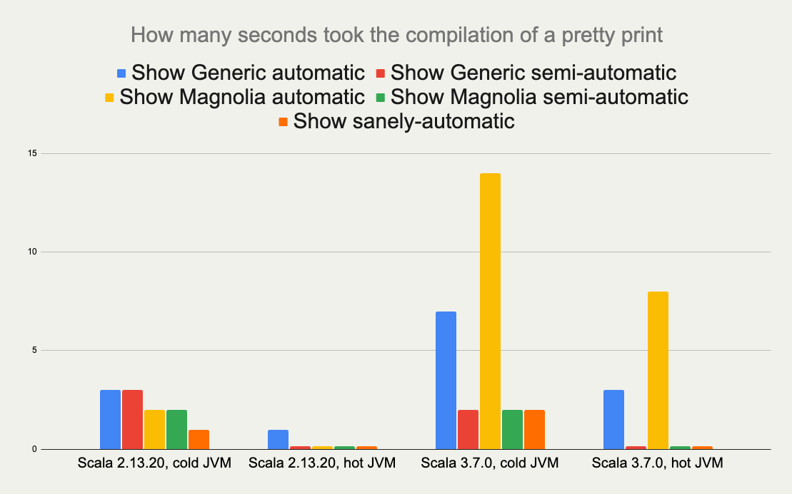
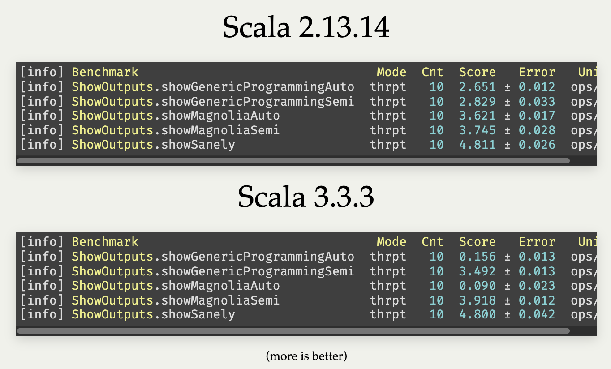
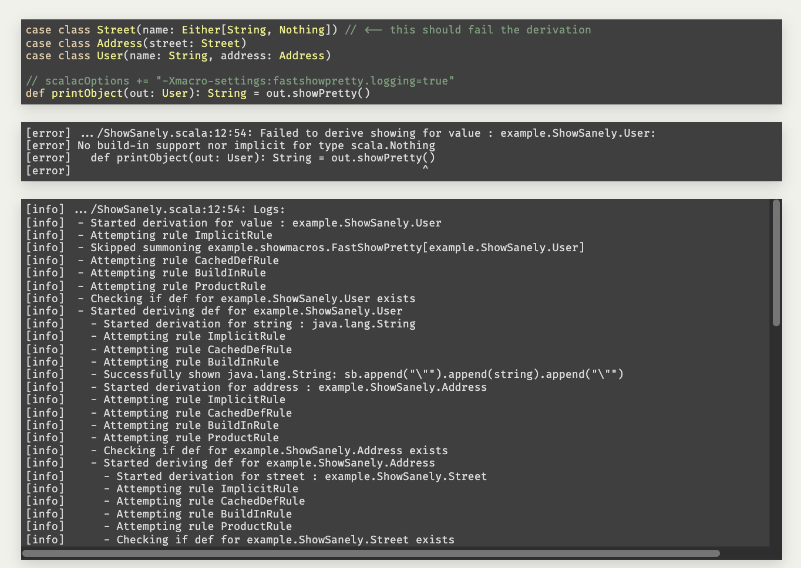
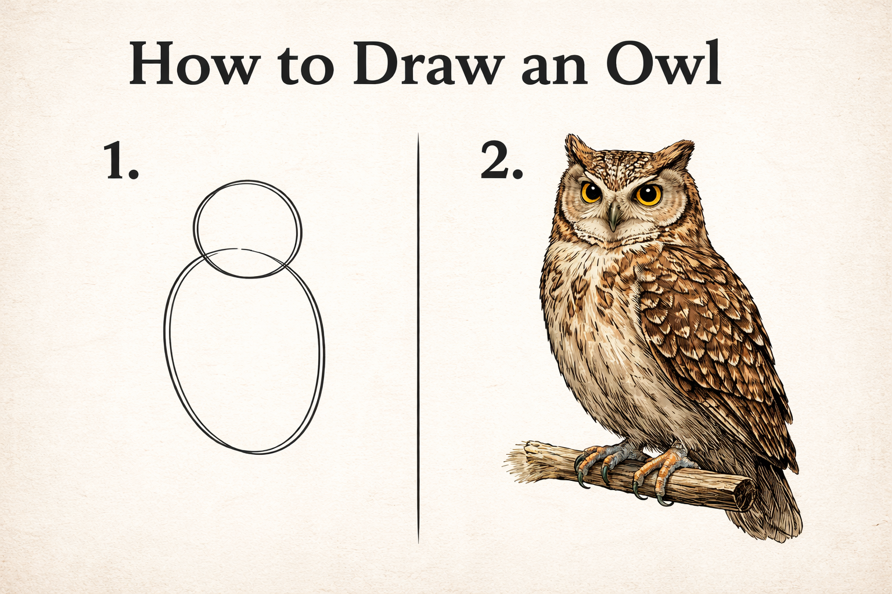
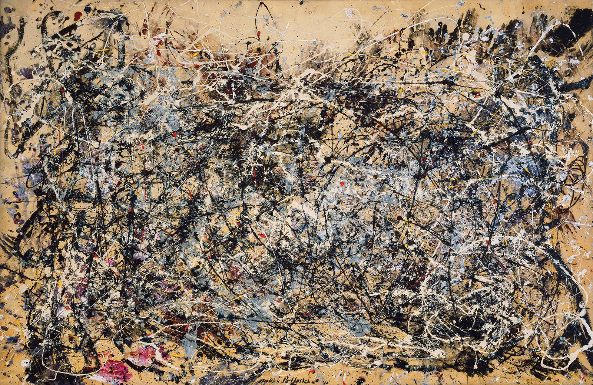
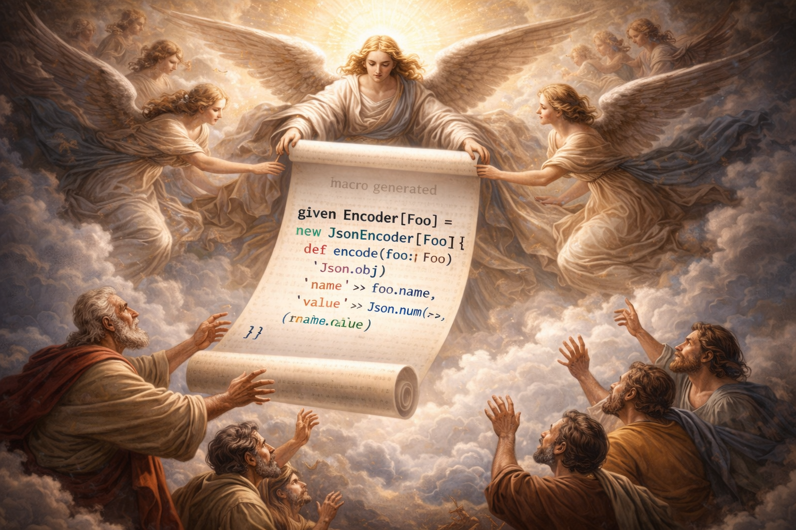
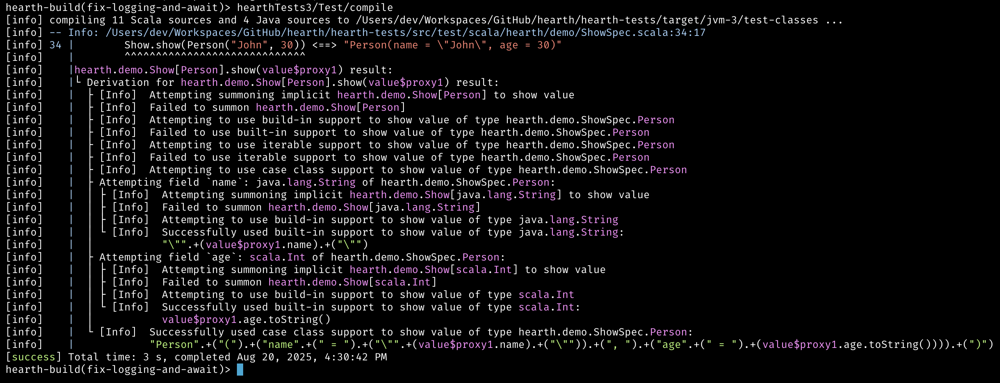
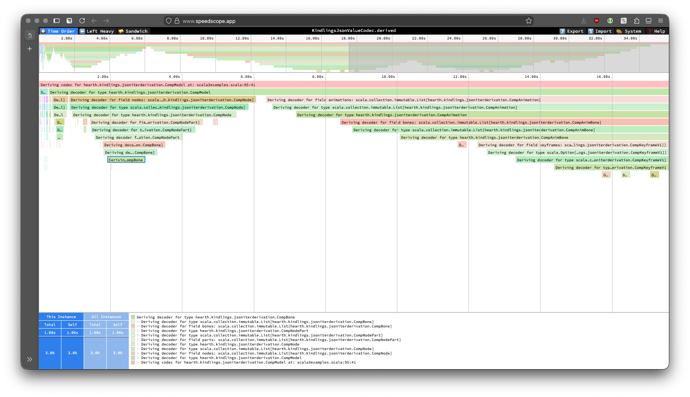

implicit not found
// vs
Failed to derive showing for value:
example.ShowSanely.User:
No build-in support nor implicit
for type scala.NothingGame of the Year Edition
Mateusz Kubuszok
Scala developer for almost 11 years
co-author and maintainer of Chimney for about 9 of them
blogged at Kubuszok.com
wrote Things you need to know about JVM (that matter in Scala)
several presentations about metaprogramming in Scala
The background

we can share macros code between Scala 2 and Scala 3
macros are not slow - overworking type checker via implicit resolution is
macros can aggregate errors, and know their context - better errors
macros can log their internal logic and resulting expression
macros have more opportunities to micro-optimize the code
while usage of semi-automatic derivation still makes sense - it is not required to use everywhere at all time to keep the project maintainable - that’s issue of Shapeless/Circe approach, not the type class derivation itself
eye-opening: we can have much better derivation tools
not a matter of Chimney being special — doable by every library doing type class derivation

Show me the code"
 |  |
|  |
pain to implement for library authors
unless we make it easier, nobody would actually use this
Chimney’s tools, though a huge improvement, have rough edges
not suitable for generic type class derivation as-is
Why macros suck
virtually no sources
official Scala documentation is basically…

Scala 2 (Quasiquotes) | Scala 3 (Quotes) |
| |
Scala 2 (Quasiquotes) | Scala 3 (Quotes) |
| |
Scala 2 (Quasiquotes) | Scala 3 (Quotes) |
| |
Scala 2 (Quasiquotes) | Scala 3 (Quotes) |
| |
Scala 2 (Quasiquotes) | Scala 3 (Quotes) |
| |

(Not a macro, but looks very similar)
Scala 2 (Quasiquotes) | Scala 3 (Quotes) |
|
|
Let’s imagine such an API

val a = MIO {
21
}
val b = MIO {
37
}
a.map2(b)(_ + _) // applicative syntaxfor {
i <- MIO(1)
j <- MIO(2)
} yield i + j // monadic syntaxList("1", "2", "3", "a", "b").parTraverse { a =>
MIO(a.toInt)
} // .par* aggregates errorsLog.namedScope("All logs here will share the same span") {
Log.info("Some operation starting") >> // standalone log
MIO("some operation")
.log.info("Some operation ended") >> // log after IO
Log.namedScope("Spans can be nested") {
Log.info("Nested log") // we can nest as much as we want
}
}All logs here will share the same span:
├ [Info] Some operation starting
├ [Info] Some operation ended
└ Spans can be nested:
└ [Info] Nested log// Yet another utility, because .map/.flatMap
// cannot handle this:
MIO.scoped { runSafe =>
Expr.quote { // <- instead of '{}/ q"..."
new Show[A] {
def show(a: A): String = Expr.splice {// <- instead of ${}
runSafe {
deriveShowBody(Expr.quote{ a })// : MIO[Expr[String]]
} // : Expr[String]
}
}
} // : Expr[Show[A]]
} // : MIO[Expr[Show[A]]]val OptionType = Type.Ctor1.of[Option]
val EitherType = Type.Ctor2.of[Either]
Type[A] match {
case OptionType(a) =>
... // a is A in Option[A]
case EitherType(l, r) =>
... // l is L and r is R in Either[L, R]
case _ =>
... // A is not an Option or Either
}CaseClass.parse[A] match {
case Some(caseClass) =>
// A(summon[Arg1], summon[Arg2], ...)
caseClass.construct { parameter =>
import parameter.tpe.Underlying as Param // <- giving existential type a name!
Expr.summonImplicit[Param] match {
case Some(expr) => MIO.pure(expr)
case None => MIO.fail(
new Exception(s"No implicit for ${Type.prettyPrint[Param]}")
)
}
}
case None => MIO.fail(
new Exception(s"Not a case class: ${Type.prettyPrint[A]}")
)
} // : MIO[Expr[A]]Enum.parse[A] match {
case Some(enumm) =>
// expr match {
// case b: B => "B" + " : " + b.toString
// ...
// }
enumm.matchOn(expr) { matchedSubtype =>
import matchedSubtype.{Underlying as B, value as b}
// B <- named existential type
// b: Expr[B]
val bName = Expr(B.simpleName) // Expr[String]
MIO {
Expr.quote {
Expr.splice { bName } + " : " + Expr.splice { b }.toString
}
}
}
case None => MIO.pure(Expr("not an enum"))
} // : MIO[Expr[String]]Type[A] match {
case IsCollection(isCollection) =>
import isCollection.Underlying as Item
val iterable = isCollection.value.asIterable(collection)
iterable.map { item => ... }
case _ => ...
}Type[A] match {
case IsValueType(isValueType) =>
import isValueType.Underlying as Inner
val unwrapped = isValueType.value.unwrap(Expr.quote(outer))
isValueType.value.wrap match {
case CtorLikeOf.PlainValue(ctor, _) =>
ctor(Expr.quote(builder))
}
case _ => ...
}// No imports needed! Just add the integration dependency.
case class WithNEL(values: NonEmptyList[Int])
case class RefinedPerson(
name: String Refined NonEmpty,
age: Int Refined Positive
)
// These just work — encoding, decoding, validation:
KindlingsEncoder.encode(WithNEL(NonEmptyList.of(1, 2, 3)))
// => {"values": [1, 2, 3]}
KindlingsDecoder.decode[WithNEL](Json.obj("values" -> Json.arr()))
// => Left(...) — rejects empty NonEmptyList!
KindlingsDecoder.decode[Int Refined Positive](Json.fromInt(-1))
// => Left(...) — validates the predicate!// Put outside of companion to prevent auto-summoning!
implicit val logDerivation: Show.LogDerivation = Show.LogDerivation
Test / scalacOptions ++= Seq(
"-Xmacro-settings:hearth.mioBenchmarkScopes=true",
s"-Xmacro-settings:hearth.mioBenchmarkFlameGraphDir=${crossTarget.value / "graphs"}"
)
with Hearth
|
The incubator for Hearth-based libraries
|
Encoder[A], Decoder[A], Codec.AsObject[A]
all circe-generic-extras features on Scala 2 and Scala 3
unified API across Scala versions
value class unwrapping (broken in upstream Scala 3)
recursive types without Lazy wrappers
@fieldName annotation on both Scala 2 and 3 (upstream: Scala 2 only)
JVM + JS + Native
JsonValueCodec[A], JsonCodec[A], JsonKeyCodec[A]
virtually all JsonCodecMaker configuration options
unified API across Scala versions
recursive types without special flags
JVM + JS + Native
reuses your Circe or jsoniter-scala configuration
schema always matches your codecs
correct generic type parameter names
// Your Tapir schema automatically matches your JSON codec config
def schema[A: Schema]: Schema[Foo[A]] = Schema.derived
// schema[String] will be named Foo[String] instead of Foo[A]!no more config drift between schema and codec
And if you think it’s still too limited to prove anything useful beyond encoders and decoders…
Monomorphic (kind | Polymorphic (kind |
|
|
sharing the type class derivation logic
sharing the unit tests
exact same API on Scala 2.13 and Scala 3
use them today on Scala 2.13 — migration to Scala 3 is not a blocker
AI-assisted development
virtually every single one of these libraries was completely vibe-coded
over one week
using Claude Code to implement all of it
a single person, one week, if really dedicated
libraries that took years to develop — ported in days
a lot of tokens burned, then bam — everyone benefits
the API is sane enough that AI can use it effectively
this is empowering for the community
macros can be better for users than Shapeless/Mirrors
Hearth makes macros approachable for library authors
Kindlings proves it works across many real-world libraries
AI makes the development fast
we can give ourselves better tools — today